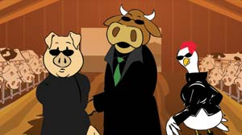
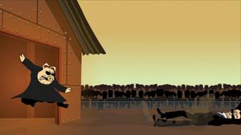

Are you the one who can help save the world from factory farms? Find out by watching The Meatrix II: Revolting, a four-minute animated video released by Sustainable Table and Free Range Studios. This edgy, information-packed film is spreading the word about the dangers of industrial dairy farms.
The Meatrix II: Revolting and its predecessor play off the Hollywood blockbuster film, The Matrix. The 2003 Meatrix won critical acclaim and educated more than 10 million viewers about corporate farming practices. In the first Meatrix, a pig named Leo is approached by a mysterious, trench coat-clad cow named Moopheus, who introduces Leo to the stark reality of modern factory farms. (In The Matrix, Morpheus teaches Neo that the reality humanity knows is an illusion created by machines, but that humanity can be saved if they work together to shatter this Matrix.)
In The Meatrix II, Leo and Moo-pheus, together with Chickity, their partner in the resistance, visit a commercial dairy farm and learn the ugly truth about how dairy cows are raised - including an unnatural diet that feeds the dead back to the living; overcrowded, unsanitary living conditions; injections of genetically engineered hormones that increase milk production; and the antibiotics cows must be fed to survive in these conditions. The trio also learns about the pollution generated by the massive quantities of waste that industrial dairies produce, and finally face the truth about factory farming, rather than subscribe to “the lie we tell ourselves about where our food comes from.”
In addition to educating consumers about factory farming, the Meatrix Web site includes an Eat Well Guide with listings of local small farms (searchable by ZIP code), as well as a virtual tour of an industrial farm. To view these short films on your computer, visit www.themeatrix2.com.
|
 SUSTAINABLE TABLE The Meatrix 2: Revolting is a four-minute Internet video that’s spreading the word about the dangers of industrial dairy farms. |
 SUSTAINABLE TABLE Watch The Meatrix 2: Revolting and help kung fu inhumane factory farming. |
|